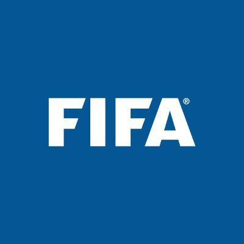

El fútbol o como muchos también lo conocen, soccer, es el deporte más famoso que existe en la actualidad al rededor del mundo, el cual se juega entre dos equipos de once jugadores cada uno. Y el objetivo del juego es marcar más goles que el equipo contrario en un campo rectangular con porterías en cada extremo.
Se juega principalmente con los pies, aunque los jugadores también pueden utilizar otras partes de su cuerpo,
excepto las manos y los brazos, con la excepción del portero, quien puede usar sus manos dentro de su propia área.
El balón se controla mediante conducción con el pie, pases y tiros a la portería. Los equipos compiten por el control
del balón y tratan de avanzar hacia la portería contraria para marcar un gol.
Un gol en fútbol es la acción de lograr que el balón atraviese completamente la línea de gol y entre los dos postes de la portería del equipo contrario, y no es necesario que el balón deba de tocar la red de la portería.
Existen varios tipos de fútbol en la actualidad y los más reconocidos son:
- Fútbol soccer
- Fútbol sala
- Fútbol 7
- Fútbol playa
El fútbol está regulado y administrado por varias organizaciones a nivel mundial, pero la principal entidad que maneja el fútbol es la FIFA (Federación Internacional de Fútbol Asociación), la cual establece las reglas del juego, organiza torneos internacionales importantes como la Copa Mundial de la FIFA y supervisa el desarrollo del fútbol en todo el mundo.
